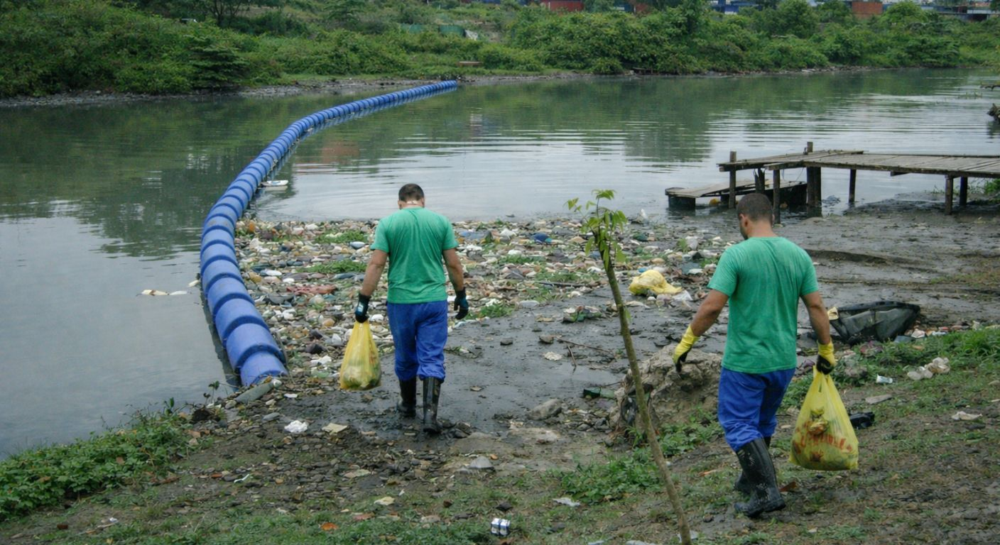
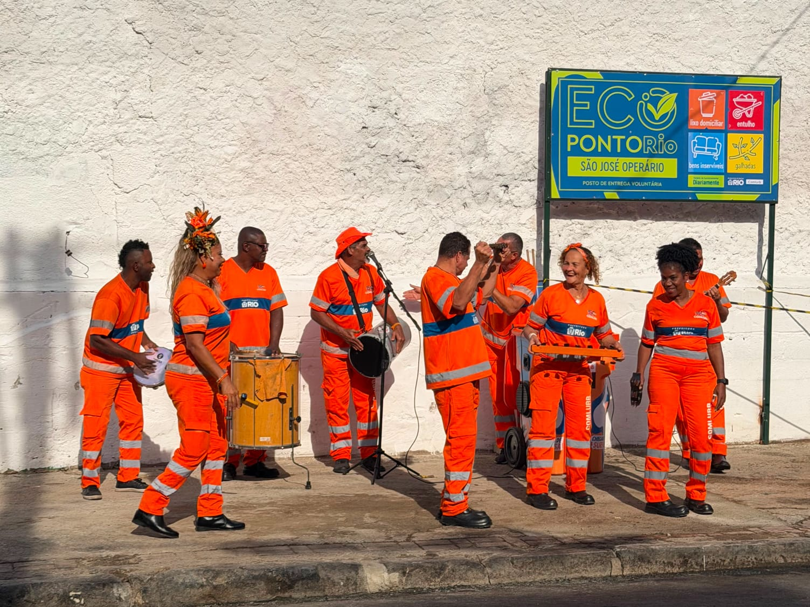
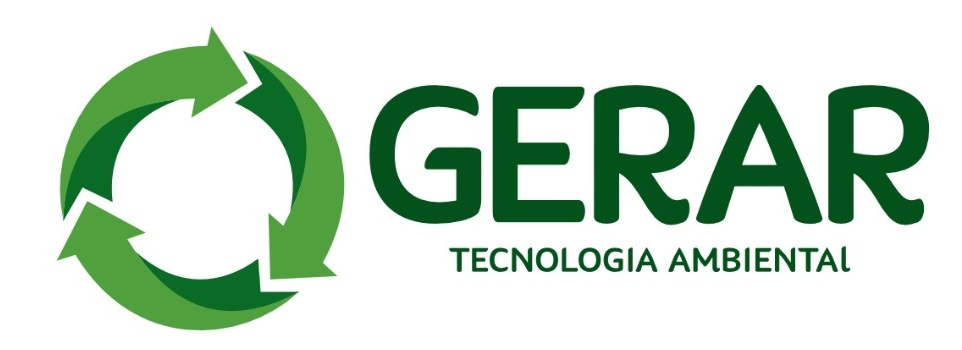

Nossos parceiros
Valorizamos conexões com órgãos públicos, federações e empresas de tecnologia que compartilham do compromisso com a sustentabilidade e regulação ambiental.

FEBRACOMRede formalizada e licenciada composta por cooperativas de catadores e recicladores do RJ. Atua em parceria com o governo estadual e prefeituras em capacitação e coleta seletiva.
Órgão ambiental indireto vinculado à Secretaria de Estado do Ambiente e Sustentabilidade, responsável por licenciar, fiscalizar e regular as boas práticas ecológicas.

COMLURBA maior organização de limpeza pública da América Latina, responsável pela coleta domiciliar, hospitalar, industrial e destinação correta de detritos no município do RJ.

GERAREmpresa brasileira com grande expertise no processamento térmico e desenvolvimento de soluções sustentáveis integradas de mitigação de impactos em meio ambiente.